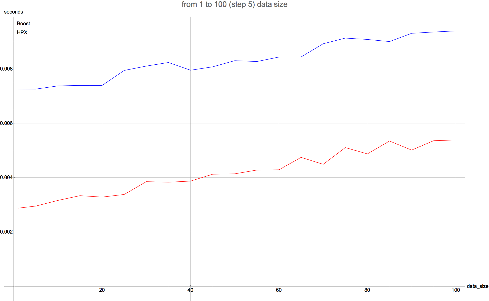

Comparison of parcel serialization using Boost.Serialization and hpx_serilization;
-O3 flag is used for both tests;
array optimisation (bitwise serialization) is disabled;
continuation is disabled;
data size is the size of container of doubles;
To summarize, the following stuff is serialized in this test:
- parcel_id (naming::gid_type);
- start_time (double), creation_time (double);
- dest_size (uint64_t), has_source_id (uint8_t), has_continuation (uint8_t);
- id_type (naming::id_type);
- address (naming::address);
- action_name (std::string);
- action_arguments (util::tuple);
- parent_locality (uint32_t), parent_id (uint64_t), parent_phase (uint64_t);
- priority (threads::thread_priority), stack_size (threads::thread_stacksize);
